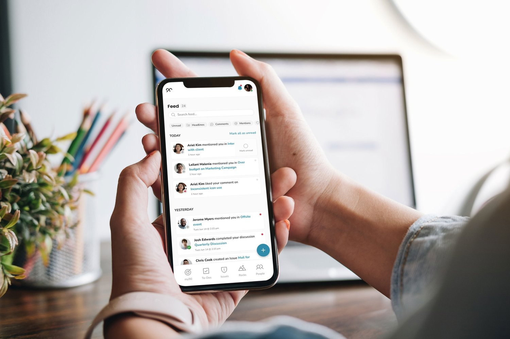
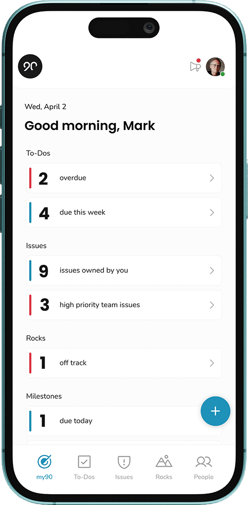

Overview
The case for mobile started with the data
Ninety is a business operating system that leadership teams live in — goals, to-dos, issues, and meetings. But it only existed on desktop. I spearheaded the initial discovery for a mobile experience after compiling usage data and customer feedback that showed an urgent need for a native app or PWA.
The voice of the customer was blunt:
“I would like to say that this tool is outstanding. However, the lack of notifications and the mobile app are annoying… without an app, this software is not versatile.”
Users were managing real work on the go — and the product wasn’t there. The opportunity was to design an intuitive, action-driven mobile experience tailored to those on-the-go workflows, not a shrunken copy of the desktop.
The Problem
Feature parity was the trap. User value was the strategy.
The instinctive brief for a first mobile app is “put the product on a phone.” That would have failed: Ninety’s desktop surface is broad and dense, built for planning sessions and leadership meetings — not for the thirty seconds someone has between meetings.
I drove a strategic shift from feature parity to user value. The mobile experience would prioritize:
My Role
Lead Product Designer, end to end
I led design for the app from discovery through ship, working with the Head of Product, two product managers, and the engineering team:
Discovery
Interviews, themes, and two personas to design for
I conducted semi-structured interviews with current customers about how they worked away from their desks, then synthesized the sessions in Dovetail to identify the recurring themes. The analysis produced two primary personas that anchored every scope decision — each with distinct contexts, frequencies, and jobs that mobile needed to serve.
The two primary personas from discovery research. Click to view full size.
Design Strategy
An action-driven experience, not a dashboard on a phone
The app opens to what matters today: a personalized morning view of overdue and upcoming to-dos, issues, and rocks. The feed keeps users connected to team activity — mentions, comments, completions — and a persistent create action means capturing a to-do or raising an issue takes seconds from anywhere in the app.


Testing & Validation
Validate cheap, commit with confidence
I mapped the user journey flows and designed unmoderated usability tests (Useberry) to validate the core flows before engineering committed. Results went back to stakeholders, and we chose the highest-impact approach the team could actually resource — an explicit trade-off conversation rather than a scope that quietly ballooned.
The toolkit across the project: Figma and FigJam for design and workshops, Dovetail for research synthesis, Useberry for unmoderated testing, Gainsight for customer signal, and Jira and Slack for delivery.
Outcomes & Recognition
Shipped, adopted, and ranked
The app shipped to both the App Store and Google Play, and was ranked in Apple’s Top 100 Business Apps. For a first mobile release from a desktop-only B2B product, the adoption curve validated the central bet: immediacy over parity.
Key Learnings
What this project taught me
Designing mobile-first means prioritizing immediacy, not parity
The most important decisions were about what not to build. Every desktop feature we declined to port was room for the mobile experience to be faster, clearer, and more focused on the moment of use. When launching something new, the discipline of the cut list matters as much as the feature list.
The adoption numbers also confirmed something I now carry into every project: clarity at every UX layer drives adoption. A focused home screen, an obvious next action, and frictionless capture did more for engagement than any individual feature would have.